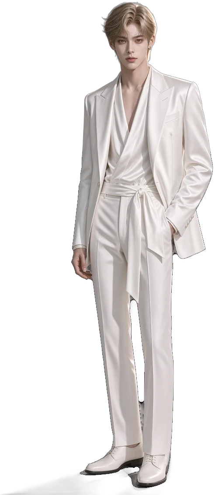
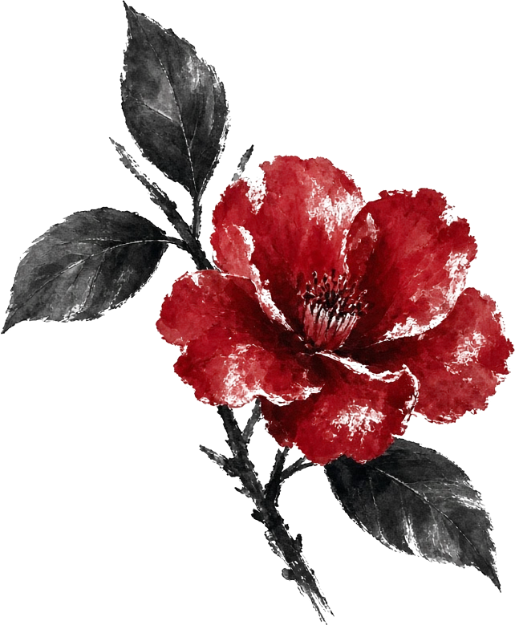

멤버MEMBERS

흰 수트의 네 사람. 백합, 동백, 수국, 능소화로 이어지는 네 개의 결.
멤버 보기 →BAND · 2026
네 사람이 하나의 결이 되는 곳
수심 12m. 빛이 닿지 않는 자리에서 먹은 가라앉고, 네 사람의 결이 하나로 엉긴다.

태준백합 LILY
유성동백 CAMELLIA

진우수국 HYDRANGEA

류현능소화 TRUMPET VINE
0m. 번진 자리마다 꽃이 핀다. 백합, 동백, 수국, 능소화.

